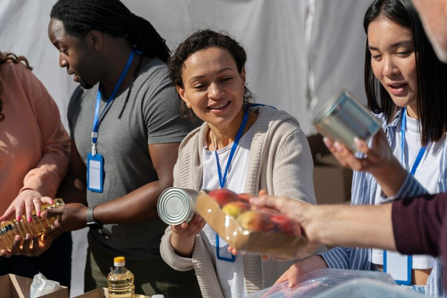

Want to volunteer, Register to get involved |
Join us to make an impact.

Discover impactful opportunities to volunteer and contribute at ReliefConnect, where we believe in the strength of collective action. Whether you're a seasoned volunteer or new to humanitarian efforts, there's a role for everyone. Contribute your skills, time, or financial support to directly participate in relief initiatives, be a community advocate, or support educational programs. ReliefConnect is more than a platform; it's a community of compassionate individuals making a positive impact. Join us in building resilience and unity as we work together to provide swift and effective aid to those in need.